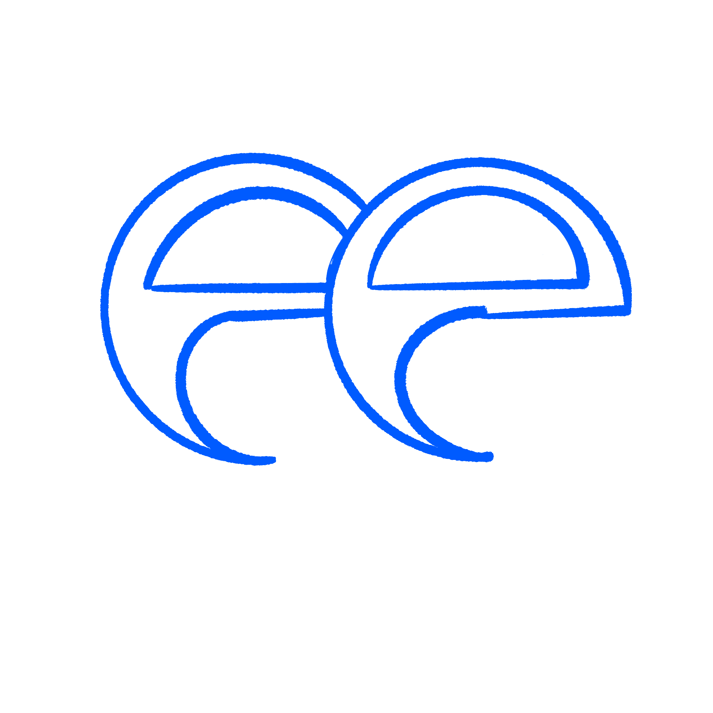
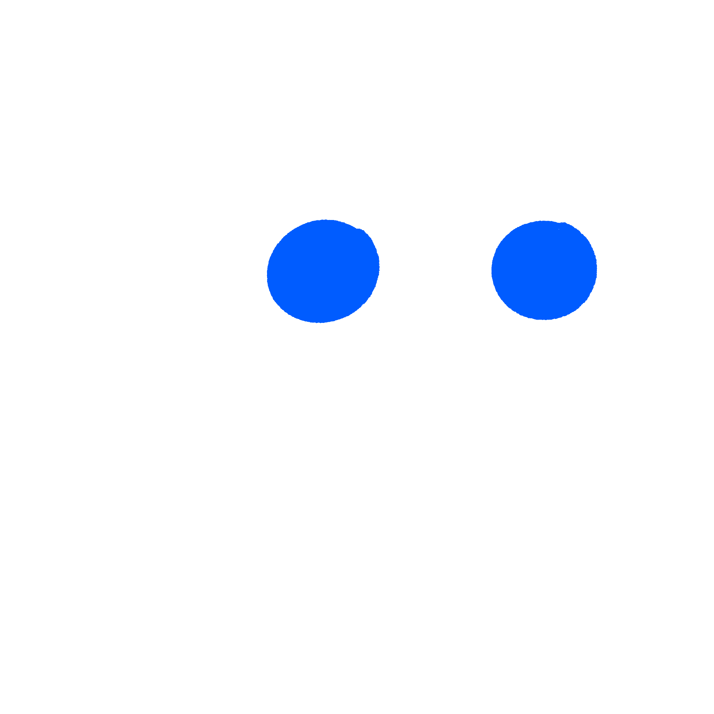
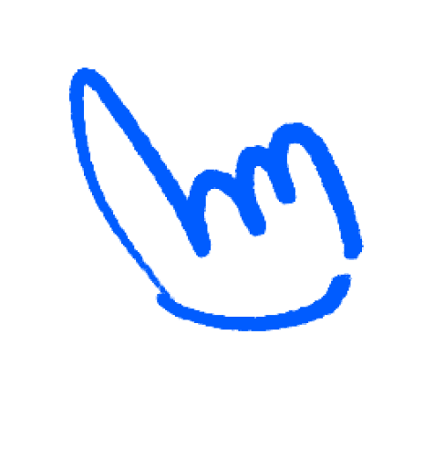
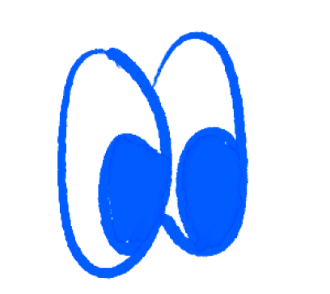

take-home
take-homeSearch with a clock, for
funds and their agents
0/60 acquired after the cutoff · ≈10× useful evidence · from $1 / 1K requests

Backtests that search twice
and get the same answer
Figure 1. Captions and notes · Stack Sans Text 14/18, 60% ink
query_time: "2023-03-09" · Sometype Mono 16/20
One index, three pilots
1
Event replay for your backtests
50
Event replay
Your 50 hardest event queries, fenced
Turnaround48 hours
OutputVerdict memo
Pass if0 leaks
ee
Adverse media
Screening on the same index
Hard cases19 / 22 right
ModeLive + fenced
StatusMeasured
$
Pay as you go
One parameter in the call you make
Price$4 / 1K queries
Kit26 tests passing
Sourcekeenable.ai/pricing
2
Chips and actions
3
Pilot for
.k-panel--split
Pilot for
your desk
.k-panel--split
Intro on the left, cards on the right, as on the live pricing panel.
50
Replay pilot
Your 50 hardest event queries
Turnaround48 hours
OutputVerdict memo
ee
Production
Live and fenced on one index
Price$4 / 1K
Sourcekeenable.ai/pricing
1/70
Keenable's clock let one result give the ending away, against 10–37 for five other search APIs with their best date filters.
Measured tonight · small sample


